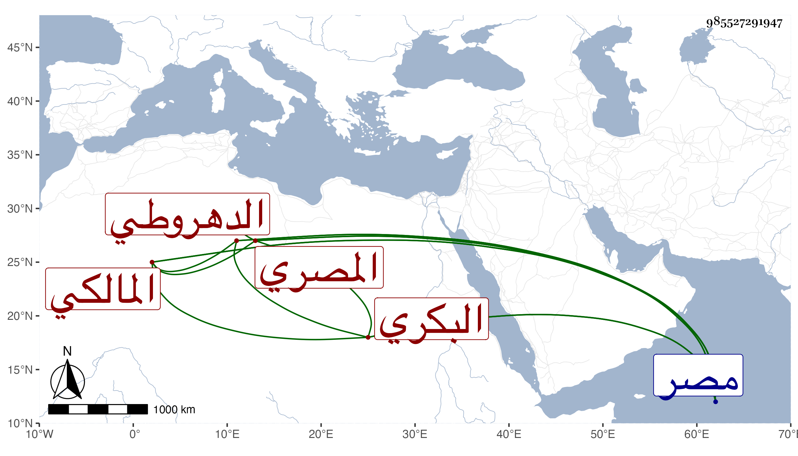

0902Sakhawi.DawLamic.ITO20230111-ara1.EIS1600.985527291947
Biography ID: 985527291947
149
محمد بن محمد بن إسماعيل الشمس البكري الدهروطي الأصل المصري المالكي ويعرف بابن المكين وهو لقب جده . اشتغل في الفقه والنحو ومن شيوخه فيه البهاء بن عقيل قرأ عليه الألفية وسمع من أبي الفرج بن القارئ شيئا من مشيخته ومن الشرف أحمد بن عبد الرحمن بن عسكر الموطأ وحدث ببعضه روى لنا عنه غير واحد منهم شيخنا وقال أنه ناب في الحكم بمصر مدة طويلة ودرس بالبرقوقية وكذا بالمسلمية بمصر . ومات في ربيع الأول سنة ثلاث عن نحو ستين سنة ، وزاد في الابناء انه عين للقضاء الاكبر فامتنع مع استمراره على النيابة . وقال العيني : كان دينا ذا وقار وسكون رحمه الله .
